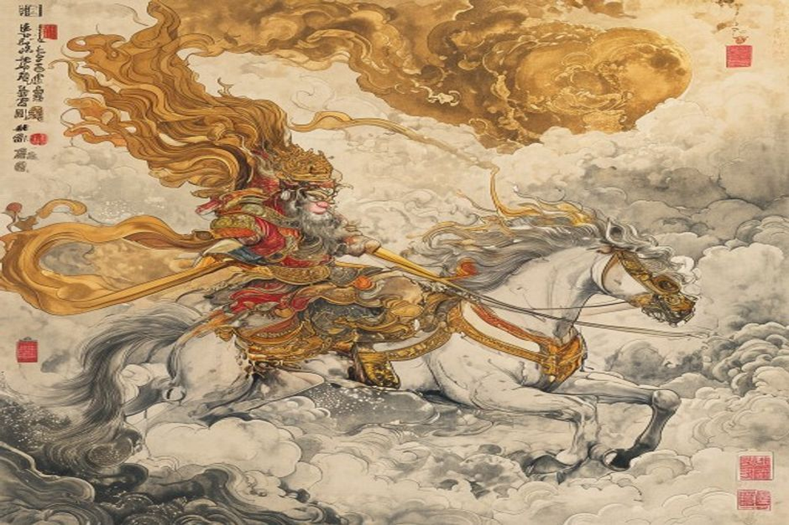

敢问路在何方？路在脚下。
About the Novel小说简介
A Ming dynasty scholar. While authorship is debated, he is traditionally credited with the canonical 1592 edition.明代学者。虽然作者身份有争议，但他传统上被认为是1592年刊印版本的作者。
Published in 1592, drawing from centuries of oral storytelling about Xuanzang's pilgrimage.1592年刊印，取材于几个世纪以来关于玄奘取经的口头传说。
The Tang dynasty, following the mythical journey from Chang'an to India.唐代，讲述从长安到印度的神话旅程。
100 chapters divided into four unequal parts.一百回，分为四个不等的部分。
Why It Matters为何重要
Based on the actual journey of monk Xuanzang (602–664) to India, the novel transforms history into myth. It's "arguably the most popular literary work in East Asia."基于玄奘法师（602-664）西行取经的真实经历，将历史转化为神话。被誉为"东亚最受欢迎的文学作品"。
敢问路在何方？路在脚下。
— Where is the road? Under your feet.— 主题曲歌词The novel operates as comedy, satire, spiritual reflection, and allegory. Each character represents different aspects of human nature.这部小说兼具喜剧、讽刺、精神反思和寓言。每个角色代表人性的不同方面。
Timeless Appeal永恒的魅力
Sun Wukong inspired Dragon Ball, "Black Myth: Wukong," and countless adaptations worldwide.孙悟空启发了《龙珠》、《黑神话：悟空》及全球无数改编作品。
Themes of perseverance, redemption, and spiritual growth remain timeless.坚持、救赎和精神成长的主题永恒不变。
The Pilgrims取经团队
The Monkey King齐天大圣
Born from stone, learned 72 transformations. His journey from rebellion to enlightenment is the novel's core.由石头所生，学会七十二变。从叛逆到觉悟的历程是小说的核心。
The Monk三藏法师
A Buddhist monk sent to retrieve scriptures from India.受命前往印度取经的高僧。
Pigsy天蓬元帅
Former heavenly marshal turned pig. His appetites provide comic relief.从天蓬元帅变为猪妖。他的贪吃好色提供喜剧效果。
Sandy卷帘大将
Dependable disciple who carries the luggage.任劳任怨，负责挑担的可靠弟子。